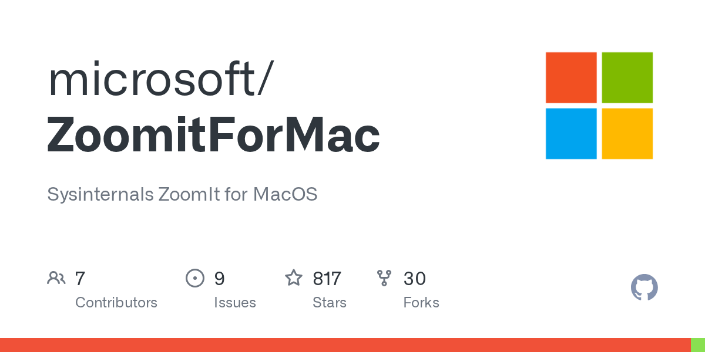

摘要
這則 Threads 貼文介紹 Microsoft Sysinternals ZoomIt 的 macOS 版本。貼文提到螢幕放大、畫筆與註解、OCR、錄影、休息計時器與捲動長截圖，並指出可透過 Homebrew 安裝。
官方來源確認
Microsoft 官方 repository microsoft/ZoomitForMac 的 README 將專案定位為「Sysinternals ZoomIt for MacOS」，並列出：
- 螢幕縮放與即時縮放。
- 畫筆、線條、矩形、橢圓、箭頭、螢光筆、擦除與文字註解。
- 全螢幕截圖、區域截圖與 OCR snip。
- 休息計時器。
- MP4 螢幕錄影，可選系統音訊、麥克風與固定攝影機子母畫面。
- 捲動全景截圖。
- 設定快捷鍵、縮放、繪圖、截圖、錄影、攝影機與啟動選項。
安裝方式
官方 README 提供 Microsoft Sysinternals tap 的安裝方式：
``sh brew install --cask microsoft/sysinternalstap/zoomit ``
README 也列出一般 cask 安裝指令：
``sh brew install --cask zoomit ``
官方系統需求為 macOS 14 或更新版本。螢幕擷取需要 Screen Recording 權限；使用麥克風或攝影機時，則需要相應的 Microphone 與 Camera 權限。
適合的使用情境
ZoomItForMac 適合簡報、線上教學、軟體展示、技術支援與螢幕操作教學。縮放和標註可協助觀眾看清楚畫面；OCR 可將畫面中的文字複製到剪貼簿；錄影與攝影機子母畫面則適合製作教學影片。
資訊查核
這篇貼文的主要功能描述與 Microsoft 官方 README 相符，因此標記為已由官方來源支持。不過本篇沒有在 macOS 實機安裝，未驗證不同 Mac 硬體、系統權限、錄影編碼與 Homebrew 環境下的實際表現。
來源證據
- Threads 原始貼文：
https://www.threads.com/@akiraxtwo/post/Db0DomLEdBu - Microsoft 官方 repository：
https://github.com/microsoft/ZoomitForMac - 公開官方封面：
../assets/public/source-images/2026-08-10-threads-zoomit-mac-cover.png
可見資訊
- 作者帳號：
akiraxtwo - 頁面相對時間：
a day ago - 擷取時可見觀看數：948 views
- 擷取時可見互動數：8 likes、2 comments、1 repost、2 shares
- 擷取時頁面顯示 Threads 登入提示。
參考資料
公開性說明
本篇使用 Microsoft 官方 GitHub repository 的公開 OG 封面，不使用 Threads 作者頭像、留言者資料或登入畫面。